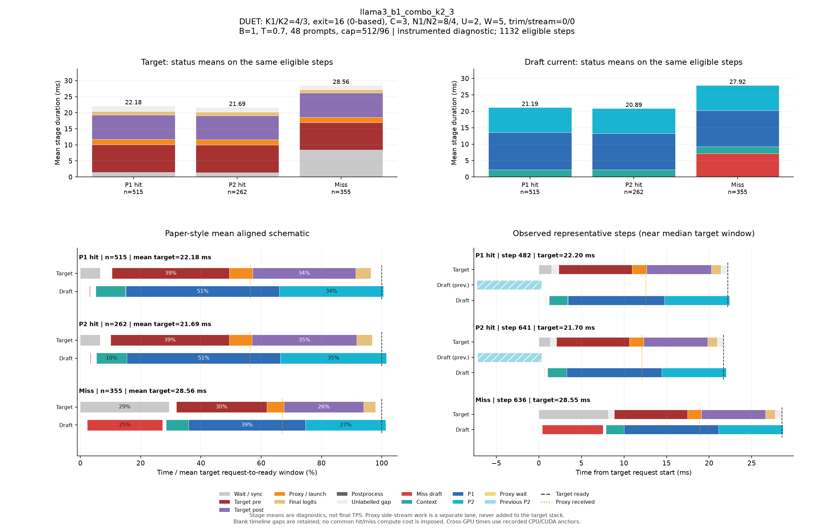

DUET: K1/K2=4/3, exit=16 (0-based), C=3, N1/N2=8/4, U=2, W=5, trim/stream=0/0
| Pass | 용도 | N | B | T | Seed | AL* | Cache hit | TPS* | Raw TPS |
|---|---|---|---|---|---|---|---|---|---|
| 0 | profile-diagnostic | 48 | 1 | 0.7 | 5100 | 2.742 | 68.22% | 78.11 | 78.16 |
Input/output cap: 512/96 · GPUs: 4,5 · draft seed: 0 · source: c02aceed848ce3f1f77709a9d3fd799a5f867191
PNG · 벡터 PDF · 원본 결과 JSON
세부 trace: 1132 eligible steps. Target 원본 · Draft 원본
제외 수: {"initial": 19, "output_boundary": 42, "capture_or_next": 12}
왼쪽 아래는 상태별 평균 정렬 schematic, 오른쪽 아래는 실제 대표 step입니다. %의 분모는 각 상태의 평균 target request→ready 시간이며 phase overlap은 별도 lane에 표시합니다.

{
"args": {
"target": "/data/chokwans99/models/layerskip-llama3-8B",
"draft": "/home/chokwans99/models_mlsys/Qwama-0.5B-Instruct",
"mode": "duet-tree",
"batches": [
1
],
"temperatures": [
0.7
],
"seeds": [
5100
],
"target_tp": 1,
"prompts": "/home/chokwans99/PSD-mlsys-coverage/results/mlsys_coverage/round5/tuning48.json",
"limit": 0,
"max_new_tokens": 96,
"max_model_len": 2048,
"input_cap": 512,
"k1": 4,
"k2": 3,
"draft_fan_out": 2,
"proxy_fan_out": 1,
"p1_tree": true,
"p1_verify_nodes": null,
"p2_verify_nodes": null,
"exit_layer": 16,
"p1_nodes": 8,
"p2_nodes": 4,
"tree_width": 3,
"p1_roots": 2,
"p2_budget": null,
"tree_root_count": null,
"tree_beta": 0.0,
"tree_proxy_threshold": 0.01,
"tree_conf_threshold": 0.03,
"root_source": "complement",
"root_normalization": "full",
"root_overlap_mix": 0.25,
"memory_fraction": 0.45,
"ignore_eos": false,
"greedy_only": false,
"audit_preemption": false,
"ragged_limits": false,
"tree_calibration_dir": null,
"preflight_test": null,
"output": "/home/chokwans99/PSD-mlsys-coverage/results/mlsys_coverage/round5/llama3_b1_combo/llama3_b1_combo_k2_3.json"
},
"engine_kwargs": {
"num_gpus": 2,
"max_num_seqs": 1,
"max_model_len": 2048,
"max_num_batched_tokens": 2048,
"gpu_memory_utilization": 0.45,
"speculate": true,
"draft_async": true,
"greedy_only": false,
"jit_speculate": true,
"speculate_k": 7,
"async_fan_out": 3,
"duet_p1_tree_policy": "on",
"duet_p2_tree_policy": "on",
"draft": "/home/chokwans99/models_mlsys/Qwama-0.5B-Instruct",
"duet_enabled": true,
"duet_exit_layer": 16,
"duet_phase1_k": 4,
"duet_phase2_k": 3,
"duet_draft_fan_out": 2,
"duet_p2_tree_max_nodes": 4,
"duet_p2_tree_verify_nodes": 4,
"duet_p1_tree_max_nodes": 8,
"duet_p1_tree_verify_nodes": 8,
"duet_tree_c_tensor": 3,
"duet_p1_roots_per_position": 2,
"duet_p2_budget": null,
"duet_tree_root_count": null,
"duet_tree_beta": 0.0,
"duet_tree_proxy_threshold": 0.01,
"duet_tree_conf_threshold": 0.03,
"duet_root_source": "complement",
"duet_root_normalization": "full",
"duet_root_overlap_mix": 0.25
},
"env": {
"CUDA_VISIBLE_DEVICES": "4,5",
"SSD_CUDA_ARCH": "8.9",
"SSD_ATTN_BACKEND": "auto",
"SSD_DIST_PORT": "31206",
"OMP_NUM_THREADS": "4",
"SSD_SEED": "0",
"SSD_CHAIN_PROXY_GRAPH": "1",
"SSD_FAST_VERIFY": "1",
"SSD_BATCHED_PROXY_GRAPH": "1",
"SSD_DUET_EXIT_REPLICA": "0",
"SSD_ASYNC_PROXY_SEND": "1",
"SSD_PROXY_STREAM": "0",
"SSD_BATCHED_TREE": "1",
"SSD_TREE_EXPANSION_POLICY": "reach_gain_frontier",
"SSD_TREE_REACH_CALIBRATION": "/home/chokwans99/PSD-mlsys-coverage/results/mlsys_coverage/round4/calibration/reach.json",
"SSD_TREE_GAIN_CALIBRATION": "/home/chokwans99/PSD-mlsys-coverage/results/mlsys_coverage/round4/calibration/gain.json",
"SSD_DUET_MISS_K": "4",
"SSD_TREE_FUSED_MATH": "1",
"SSD_BATCH_TREE_BULK_EXPORT": "1",
"SSD_TREE_PARALLEL_INSERT": "0",
"SSD_PROFILE_DUET": "1",
"SSD_PROFILE_DUET_MAX_EVENTS": "100000",
"SSD_TREE_SHAPE_METRICS": "1",
"SSD_PROFILE_DIR": "/home/chokwans99/PSD-mlsys-coverage/results/mlsys_coverage/round5/profiles/llama3_b1_combo_k2_3",
"SSD_HF_CACHE": "/data/chokwans99/models",
"SSD_DATASET_DIR": "/home/chokwans99/PSD-mlsys-coverage/results/mlsys_coverage/round5"
},
"effective_features": {
"fast_verify": true,
"batched_proxy_graph": true,
"exit_replica": false,
"jit_speculate": true,
"duet_jit_short": true,
"miss_depth": 4,
"miss_width": 1,
"tree_fused_math": true,
"tree_parallel_insert": false,
"bulk_export": true
},
"resolved_env": {
"SSD_CUDA_ARCH": "8.9",
"SSD_ATTN_BACKEND": "auto",
"SSD_DIST_PORT": "31206",
"SSD_SEED": "0",
"SSD_CHAIN_PROXY_GRAPH": "1",
"SSD_FAST_VERIFY": "1",
"SSD_BATCHED_PROXY_GRAPH": "1",
"SSD_DUET_EXIT_REPLICA": "0",
"SSD_ASYNC_PROXY_SEND": "1",
"SSD_PROXY_STREAM": "0",
"SSD_BATCHED_TREE": "1",
"SSD_TREE_EXPANSION_POLICY": "reach_gain_frontier",
"SSD_TREE_REACH_CALIBRATION": "/home/chokwans99/PSD-mlsys-coverage/results/mlsys_coverage/round4/calibration/reach.json",
"SSD_TREE_GAIN_CALIBRATION": "/home/chokwans99/PSD-mlsys-coverage/results/mlsys_coverage/round4/calibration/gain.json",
"SSD_DUET_MISS_K": "4",
"SSD_TREE_FUSED_MATH": "1",
"SSD_BATCH_TREE_BULK_EXPORT": "1",
"SSD_TREE_PARALLEL_INSERT": "0",
"SSD_PROFILE_DUET": "1",
"SSD_PROFILE_DUET_MAX_EVENTS": "100000",
"SSD_TREE_SHAPE_METRICS": "1",
"SSD_PROFILE_DIR": "/home/chokwans99/PSD-mlsys-coverage/results/mlsys_coverage/round5/profiles/llama3_b1_combo_k2_3",
"SSD_HF_CACHE": "/data/chokwans99/models",
"SSD_DATASET_DIR": "/home/chokwans99/PSD-mlsys-coverage/results/mlsys_coverage/round5",
"SSD_FORCE_SPLIT_K1K2": "1",
"SSD_DUET_JIT_SHORT": "1",
"SSD_SHM_NAME": "ssd_2668174"
},
"runtime_source_sha256": {
"ssd/ssd/__init__.py": "f1a221b38f55b42ef0619cba48a411acbbd1965c4845b4643f77443b7ce77950",
"ssd/ssd/config.py": "865ddb5e09ec11f4bc8511dad3f5abad39a6ab412cf0bbcd6213179b5245fa31",
"ssd/ssd/engine/block_manager.py": "05d873619b419d31f47b4be4025bc7c9f11759f5f0bc3f65fbff3a1e8f94660a",
"ssd/ssd/engine/draft_runner.py": "8cb7e22f725de2c0d9c85912ae04f88f1674f34c0cee4b5beccc9a3b5be1c174",
"ssd/ssd/engine/helpers/batch_tree_common.py": "739feeb975c20d0adbdae51735b8983aa6cae8b59d6237b285db0c766d558f27",
"ssd/ssd/engine/helpers/batch_tree_draft.py": "f361030685350183884cc55b9058945515bb00da53fc86541f7902bfd2138528",
"ssd/ssd/engine/helpers/batch_tree_forward.py": "0c6079d2bdbf7ecc000b2a98b94b49b1942939d34ada80b15f57510de8a20940",
"ssd/ssd/engine/helpers/batch_tree_inputs.py": "c0a05d13ba0e63ecbc920425ddd6a98dc60001d93d73085e75d2d4a9b110a066",
"ssd/ssd/engine/helpers/batch_tree_roots.py": "ad3c4e772392c1043284ac4912d606543f3fd76167135b73e4f72a700e6820c7",
"ssd/ssd/engine/helpers/batch_tree_sampling.py": "46f36658cb189bc080ae0d4b8561f84662290facacccf6600f129eb6e93ee66b",
"ssd/ssd/engine/helpers/batch_tree_verify.py": "f1258a91f3aea07be44267602808a8075769ee2e1908dad67ff49f7b1bbe811b",
"ssd/ssd/engine/helpers/batched_proxy.py": "6ed4f9b85ff8cf9c24b7ad43a1b7377d08123eeef5307366a373dacda184da86",
"ssd/ssd/engine/helpers/batched_tree_executor.py": "098d64cad2d20d96091631f6bc91da73b1e893ec400c3431a4ed68d007a9ef45",
"ssd/ssd/engine/helpers/cudagraph_helpers.py": "0436aec61d05d0b79696a48665042e364f3f4c50d853b68dc424e435b54be0c9",
"ssd/ssd/engine/helpers/e0_trace.py": "23ecd9bce2587cbef3f99c8894964c0d9642d33d372bd7be4954a5a2840a142e",
"ssd/ssd/engine/helpers/mask_helpers.py": "8ada4e709a6ab310ee920a7176b3684f89860022fc659442f6cb02ed5fb87d88",
"ssd/ssd/engine/helpers/p1_tree.py": "f48ae6b01e593d2598262b34007a6b58dde9e57e94138dde62f81d5526637398",
"ssd/ssd/engine/helpers/p2_tree.py": "73b0a512d834ab3a4608d9cd898b13b32630dd3b914b49e753c1116ac0640b41",
"ssd/ssd/engine/helpers/p2_tree_executor.py": "cfb04f959fd08baf3819a688a907cac4e3071a2727085ea08ca089b50a21e82e",
"ssd/ssd/engine/helpers/packed_tree_forward.py": "b903d6fe4d1fe18f95f6540f488acf40d469154100239429256eace61b1d7e76",
"ssd/ssd/engine/helpers/packed_verify.py": "a50ff24e93324840783b60102bfaeb3786711f05f64bd897708c779535c1820f",
"ssd/ssd/engine/helpers/root_policy.py": "5e3a8e2f9b2fe43fec52eb9e80fe59cb0d28177122f7e75c823c5ffd20aee718",
"ssd/ssd/engine/helpers/runner_helpers.py": "bfb570d8e018ee296a6c2a8c3c9e75919fd0eb1beb288ceb80121ad116419bf2",
"ssd/ssd/engine/helpers/speculate_types.py": "2929b5f3a176d04b6a4b01f092b224ad733dfda10a647bb73801cd346441ae91",
"ssd/ssd/engine/helpers/tree_expansion_policy.py": "47f818d1b8f284e56813af294723f6a934c3da0502b9ae4e611b54ba6fb85dac",
"ssd/ssd/engine/helpers/tree_fused_math.py": "930a1215363a3b6f878cbc4a71c3f59293f46aa2eab3c4938e5bb51e95868d2e",
"ssd/ssd/engine/helpers/tree_gain_allocation.py": "6f32c6a7b69272c1b42992d95c546bfd3980ccd71af3b3346e9df61977907b6a",
"ssd/ssd/engine/helpers/tree_host_topology.py": "86d0deab4da2932540a108c4c2b3560b8634837e71ba23783375c2001e4cf81c",
"ssd/ssd/engine/helpers/tree_layout.py": "4e5e47c54a4efd5a30ae8c528e1d2d9493d12aa5605c0e65c2f86ba874805be1",
"ssd/ssd/engine/helpers/tree_rerank_gpu.py": "e4a8bff8828f983d6eb407504f87f2a9edf08a1750449fe46565e661f892b734",
"ssd/ssd/engine/helpers/tree_topology_gpu.py": "3a6cf8796faabbe8adef56deedf8956c1cf252a31e0491f3b71a8544bdcf89af",
"ssd/ssd/engine/llm_engine.py": "b0081876ef6470f91fa562acc0317074a85afa9aec8322182bda7749153db00f",
"ssd/ssd/engine/model_runner.py": "5fa9e910f38538c276a151113fc490be9c75ae9af2bf35ba6eaa5513b237a421",
"ssd/ssd/engine/scheduler.py": "52a36e8bb2abc26f775562a39bd95ea6cc8c70650e6193ddaa0fad762afb8ae4",
"ssd/ssd/engine/sequence.py": "6894715ef142074b118bfa3018b10826d2748518e9c8b71291064eb99fae9bd9",
"ssd/ssd/engine/speculator_async.py": "cd16395d5e5d7380d29f5a27e1495b6a40758c0452ce2cb40d996e2c3271c114",
"ssd/ssd/engine/speculator_sync.py": "30487afa7f5027735ebd752ca1a53003f1d56350f503ea91931ef64e7aab115e",
"ssd/ssd/engine/step.py": "525d3022561c9eee96ec076032bb27e281af744feb739ddc17e52344a9cafe8f",
"ssd/ssd/engine/verifier.py": "f6795547f278628312d2dd5ab0a28e9f34489b8e6d02038566a65fa3190a0928",
"ssd/ssd/layers/activation.py": "13d88b460e7610df28c6a7c719dd8bf21c5c59ae0f85c94d505d499215618a82",
"ssd/ssd/layers/attention.py": "bbafa69d9b52dedf81542f2c3227b7f061de11c679a6681a16b0c137ccfc672b",
"ssd/ssd/layers/embed_head.py": "b896a56b908d75c8f30462b0b1a4ce634276ddb41165fdaa0220c55a2ddf7257",
"ssd/ssd/layers/fi_attn.py": "4b0a275d020c1c3ce37f4e2a6c04bff12577d6f11feec7d79959652300fc9a0c",
"ssd/ssd/layers/layernorm.py": "a076c8d2e31d2597119d8504a69afd8711b41a29b5ccb7e1bf111a6c7277400e",
"ssd/ssd/layers/linear.py": "82c096262013516c5f0a43f7c28f23aa6db6b14f52cbe1ce1dacc5f9d5c4b0b6",
"ssd/ssd/layers/rotary_embedding.py": "1bcca21cf5e4d81c11a5c55d59a6033874c4e6a0003cc4ae8e1aa6165976a723",
"ssd/ssd/layers/sampler.py": "df22591a229ae5c2f62d4797707470ebccb8e55f7064577bc24a656ed797f213",
"ssd/ssd/llm.py": "496950f31428f674b70e8e137e029aa16dd82fdc8d8b8cc76f9ebdce86f7f653",
"ssd/ssd/models/eagle3_draft_llama3.py": "0d6e713a419cf884fc85984f9a2a6de520119032075a7c99158e0df7e2faca84",
"ssd/ssd/models/llama3.py": "ac801bd73e999f04a6fc862ca1d49bc94c88315456cfb6cb1215a503bcc5e07d",
"ssd/ssd/models/qwen2.py": "6804e3662a173368632e5f05b9893cc0cd28a61ac9bd25dbe8cd6f387ca0d1ca",
"ssd/ssd/models/qwen3.py": "535495bf69933fd9c677275453b801189e2c3c78a94fcc5133fc65b88c9f69c7",
"ssd/ssd/paths.py": "72c52420daaf6d457c60235617efc3f8b1e3ae208a35f3bc45438adc9d7e01ac",
"ssd/ssd/quant/__init__.py": "a69f0de0a516ba2bf9e13680b75b8f5d538c2eb281b095662ed1515f8b0f8698",
"ssd/ssd/quant/adapter.py": "fbb1ce4a198a585c31b0102555d1f84d18b09b0de1b90a5808d93ec8ff7ac271",
"ssd/ssd/quant/awq_calibrate.py": "116807eca0a3e4e001aa24a3344031416e4060a6c1b2e39f59829fba09484126",
"ssd/ssd/quant/build.py": "37f9c72ac69af213f2720c86faf380b8a46baaad0b98bf5f2e3c7fa9b3fbc43c",
"ssd/ssd/quant/config.py": "080c327b2297d0905f8fddc8d994aa7b9dc1086d7703d951471d48cea8723a1d",
"ssd/ssd/quant/importer.py": "c8990b69bc9e4e152e7e80b7f08f273c6a4652c1f7e95a8247f85e50030f4f92",
"ssd/ssd/quant/init_context.py": "6aa3dc3f6e95d8902fa7244d0010110b6fcf1ffdccedd6eaa389204339fc214f",
"ssd/ssd/quant/io.py": "f44f98a57351ff1063b7423d2f8390a565a30796fd6c3beaeaa8825f906e66b5",
"ssd/ssd/quant/loader.py": "14f901b1f53a3650be7eff497f626469e2b1fbc487202c639d33c8dd4c9047fb",
"ssd/ssd/quant/marlin.py": "4f1996e9f63d7109e92a3a7ec5350069ba67d7659f2149e99b84ca3c6626b241",
"ssd/ssd/quant/marlin_utils.py": "f64ec8d7ec8260556abd21e229567971a928882f14b93d288a6732d55c12fc90",
"ssd/ssd/quant/naming.py": "7ba73900af5e6d6fa2d1907bd2611625fc72f28a1fb9ea4834cd9a45901632d6",
"ssd/ssd/quant/pack.py": "b7dd683b7cdbfbb6f4ce1e13a51a72240a8dc3a35b7ed652dc664d26bb384711",
"ssd/ssd/quant/state.py": "82cb1050a3b1776765df7ad8f6c59c23a86ac8d1d4cc3c974cded7f8e762f806",
"ssd/ssd/sampling_params.py": "7f79868c4ca115bb18e017411a6c5545f354aa858aa0b8076aafb756d0785032",
"ssd/ssd/utils/async_helpers/async_spec_helpers.py": "0d70779098c5051fcba5d3add5ff0b7896139f1b7789babe701a8df6eaa40f24",
"ssd/ssd/utils/async_helpers/duet_policy.py": "1fb3e1ec1c41a9cda5f531f8c732b09145c7d87ea79d74c331b8176f11f22aaf",
"ssd/ssd/utils/async_helpers/nccl_pack.py": "6330e785f3e81acffe25a82061d3098f7834ad3c2d07bb071d79ed9923b18dc1",
"ssd/ssd/utils/async_helpers/tests.py": "6491ced36a2a6f06d8cf411204b1190d2ca0bc700cd0becf79c3f4cd8abcd87e",
"ssd/ssd/utils/context.py": "ce55eb45f00c91412946dd1c96f5c8f972372dd4c8069770c48e120773f301fc",
"ssd/ssd/utils/int8_debug.py": "9a71dbf2b997a9c8d9b776cc3659c8dbf32ce5411eb5cedb4a73368cee60d3d7",
"ssd/ssd/utils/loader.py": "c008eac34810772e8d9f51da896c00867481f3e1a0e6f725e0d06599c0aab59e",
"ssd/ssd/utils/misc.py": "1084b630f174d651b78b01c4ba2dff147f18d3cf52a200704b4b9eab2b72b66c",
"ssd/ssd/utils/quantize.py": "c0ee73d55f3781eba88007325d5e9e53e66ad952e0e8f19143aa8c50bc39f406",
"ssd/ssd/utils/verify.py": "0cf11b9ba19a73e9c39087fccde43071464c6f3b964e00081ebadc747ef142a4",
"ssd/ssd/utils/verify_fast.py": "23b05b7e5032fe72c8f2ef5bd7a69aa874818b08b52ea7fc0344a54c76ea28d9",
"ssd/bench/mlsys_campaign.py": "059b6316ba33e867e1fcf099a8180c186fa70b916692eca386d2a4a347b0f26f",
"ssd/bench/mlsys_coverage.py": "70b2afaf05bbbd5760c2a4f96f801976479209ca1d7a8f9eb8598139e686bdbc",
"ssd/bench/mlsys_greedy_audit.py": "b9815fd03ded7f30f7c0408629782156e73f5ceaab9f0b3b720956f5c00da141",
"ssd/bench/mlsys_preemption_audit.py": "f891ff5a69a59fb8c93e7952f9d48ac16adb7fef074763089f14d4505ecad80d",
"ssd/bench/mlsys_summarize.py": "0235aa2b56eb59c41c429351d77e90e16c52ccdf58c43e3578dd03df0f6095bd",
"ssd/bench/mlsys_tree_observer.py": "8c18248c9ef1953e2e821613099f14d155978540536939288d4fb2aa897c6263",
"ssd/bench/mlsys_verify_bench.py": "3ddc36197874d239f41a1c135570d4d7a0940d615d3d396299bae46e377bce2e"
}
}{
"groups": [
{
"status": "P1 hit",
"n": 515,
"mean_target_ms": 22.175513906386293,
"mean_decode_ms": 22.21767452536422,
"mean_intervals": [
{
"lane": "Draft current",
"label": "Context",
"start": 1.1221147379828889,
"end": 3.3280822045594745
},
{
"lane": "Draft current",
"label": "Miss draft",
"start": 0.6712102084483915,
"end": 0.7107202497500817
},
{
"lane": "Draft current",
"label": "P1",
"start": 3.3495703484248187,
"end": 14.648531236000432
},
{
"lane": "Draft current",
"label": "P2",
"start": 14.653747768772458,
"end": 22.30049762309176
},
{
"lane": "Draft current",
"label": "Proxy wait",
"start": 14.650271967545297,
"end": 14.652031676746109
},
{
"lane": "Target",
"label": "Final logits",
"start": 20.261309196416615,
"end": 21.37918028090764
},
{
"lane": "Target",
"label": "Postprocess",
"start": 22.156400795353267,
"end": 22.175513906386293
},
{
"lane": "Target",
"label": "Proxy / launch",
"start": 10.956176049500993,
"end": 12.662361592227972
},
{
"lane": "Target",
"label": "Target post",
"start": 12.66422276219118,
"end": 20.259345640256566
},
{
"lane": "Target",
"label": "Target pre",
"start": 2.333114979568037,
"end": 10.954351899693313
},
{
"lane": "Target",
"label": "Wait / sync",
"start": 0.0,
"end": 1.4395128666775898
}
],
"components": [
{
"lane": "Draft current",
"label": "Context",
"mean_ms": 2.2059674665765856,
"present_steps": 515,
"population": 515
},
{
"lane": "Draft current",
"label": "Miss draft",
"mean_ms": 0.03951004130169026,
"present_steps": 515,
"population": 515
},
{
"lane": "Draft current",
"label": "P1",
"mean_ms": 11.298960887575612,
"present_steps": 515,
"population": 515
},
{
"lane": "Draft current",
"label": "P2",
"mean_ms": 7.646749854319304,
"present_steps": 515,
"population": 515
},
{
"lane": "Draft current",
"label": "Proxy wait",
"mean_ms": 0.001759709200812775,
"present_steps": 515,
"population": 515
},
{
"lane": "Target",
"label": "Final logits",
"mean_ms": 1.117871084491026,
"present_steps": 515,
"population": 515
},
{
"lane": "Target",
"label": "Postprocess",
"mean_ms": 0.019113111033022982,
"present_steps": 515,
"population": 515
},
{
"lane": "Target",
"label": "Proxy / launch",
"mean_ms": 1.7061855427269796,
"present_steps": 515,
"population": 515
},
{
"lane": "Target",
"label": "Target post",
"mean_ms": 7.595122878065387,
"present_steps": 515,
"population": 515
},
{
"lane": "Target",
"label": "Target pre",
"mean_ms": 8.621236920125277,
"present_steps": 515,
"population": 515
},
{
"lane": "Target",
"label": "Unlabelled gap",
"mean_ms": 1.6764715032670103,
"present_steps": 515,
"population": 515
},
{
"lane": "Target",
"label": "Wait / sync",
"mean_ms": 1.4395128666775898,
"present_steps": 515,
"population": 515
}
],
"mean_markers": {
"Final logits": 21.37918028090764,
"Target ready": 22.175513906386293,
"Proxy received": 12.514480469527754
},
"representative": {
"step_id": 482,
"status": "P1 hit",
"target_ms": 22.195312023162842,
"decode_ms": 22.236834978684783,
"source_counts": {
"1": 1
},
"physical_queries": 9,
"max_valid_nodes": 8,
"unlabelled_target_ms": 1.638671875,
"intervals": [
{
"label": "Wait / sync",
"start": 0.0,
"end": 1.490234136581421,
"lane": "Target",
"original_label": "target_spec_wait"
},
{
"label": "Target pre",
"start": 2.335937023162842,
"end": 10.958984136581421,
"lane": "Target",
"original_label": "batch_target_pre"
},
{
"label": "Proxy / launch",
"start": 10.960937023162842,
"end": 12.669921159744263,
"lane": "Target",
"original_label": "batch_target_proxy"
},
{
"label": "Target post",
"start": 12.671875,
"end": 20.26953101158142,
"lane": "Target",
"original_label": "batch_target_post"
},
{
"label": "Final logits",
"start": 20.27148413658142,
"end": 21.390625,
"lane": "Target",
"original_label": "batch_target_final_logits"
},
{
"label": "Postprocess",
"start": 22.17773413658142,
"end": 22.195312023162842,
"lane": "Target",
"original_label": "target_postprocess"
},
{
"label": "Unlabelled gap",
"start": 1.490234136581421,
"end": 2.335937023162842,
"lane": "Target",
"original_label": "derived_gap"
},
{
"label": "Unlabelled gap",
"start": 10.958984136581421,
"end": 10.960937023162842,
"lane": "Target",
"original_label": "derived_gap"
},
{
"label": "Unlabelled gap",
"start": 12.669921159744263,
"end": 12.671875,
"lane": "Target",
"original_label": "derived_gap"
},
{
"label": "Unlabelled gap",
"start": 20.26953101158142,
"end": 20.27148413658142,
"lane": "Target",
"original_label": "derived_gap"
},
{
"label": "Unlabelled gap",
"start": 21.390625,
"end": 22.17773413658142,
"lane": "Target",
"original_label": "derived_gap"
},
{
"label": "Miss draft",
"start": 0.7865841388702393,
"end": 0.8276000022888184,
"lane": "Draft current",
"original_label": "batch_miss_draft"
},
{
"label": "Context",
"start": 1.2240841388702393,
"end": 3.3901000022888184,
"lane": "Draft current",
"original_label": "batch_glue"
},
{
"label": "P1",
"start": 3.4096310138702393,
"end": 14.747522115707397,
"lane": "Draft current",
"original_label": "batch_p1_total"
},
{
"label": "Proxy wait",
"start": 14.747522115707397,
"end": 14.751428127288818,
"lane": "Draft current",
"original_label": "batch_proxy_wait"
},
{
"label": "P2",
"start": 14.75338101387024,
"end": 22.372522115707397,
"lane": "Draft current",
"original_label": "batch_p2_total"
}
],
"previous": [
{
"label": "Previous P2",
"start": -7.273961782455444,
"end": 0.31392812728881836,
"lane": "Draft previous",
"original_label": "batch_p2_total"
}
],
"markers": {
"Target ready": 22.195312023162842,
"Final logits": 21.390625,
"Proxy received": 12.589318990707397
}
},
"step_ids": [
20,
21,
22,
24,
25,
26,
27,
30,
31,
36,
41,
42,
43,
44,
45,
46,
47,
48,
52,
54,
55,
56,
60,
62,
67,
68,
71,
73,
74,
75,
77,
80,
84,
86,
87,
88,
90,
93,
94,
96,
97,
100,
107,
108,
110,
112,
113,
114,
115,
116,
117,
118,
119,
122,
125,
126,
127,
128,
132,
133,
138,
142,
149,
151,
155,
157,
158,
159,
160,
163,
164,
165,
166,
171,
176,
178,
181,
188,
189,
190,
191,
192,
194,
197,
198,
199,
200,
202,
205,
207,
212,
216,
218,
220,
223,
224,
225,
228,
229,
232,
233,
234,
236,
238,
240,
244,
246,
249,
254,
255,
256,
257,
258,
259,
260,
261,
262,
268,
269,
274,
275,
278,
284,
287,
294,
296,
297,
298,
300,
302,
306,
308,
310,
311,
313,
315,
316,
320,
324,
327,
331,
335,
337,
339,
341,
349,
350,
356,
362,
364,
375,
376,
379,
382,
388,
390,
391,
392,
393,
394,
395,
397,
398,
402,
405,
406,
410,
413,
414,
417,
420,
421,
422,
423,
424,
426,
427,
431,
435,
437,
438,
441,
444,
447,
450,
451,
452,
453,
454,
455,
458,
459,
460,
461,
464,
466,
469,
470,
471,
472,
475,
476,
479,
480,
482,
483,
484,
485,
486,
487,
488,
489,
490,
491,
492,
497,
503,
509,
511,
512,
515,
516,
524,
528,
532,
535,
536,
537,
540,
541,
548,
549,
551,
556,
557,
561,
563,
565,
566,
567,
568,
579,
580,
581,
582,
583,
586,
589,
590,
592,
593,
595,
597,
599,
601,
605,
606,
613,
614,
621,
622,
623,
624,
626,
630,
632,
634,
635,
644,
645,
648,
653,
654,
656,
662,
666,
671,
674,
676,
677,
680,
681,
682,
687,
693,
703,
707,
709,
712,
713,
719,
726,
729,
733,
738,
739,
743,
744,
747,
748,
749,
752,
753,
755,
756,
760,
761,
766,
772,
775,
779,
784,
786,
787,
791,
809,
810,
812,
813,
814,
815,
816,
817,
818,
819,
820,
821,
823,
824,
825,
835,
844,
846,
847,
848,
849,
856,
857,
860,
864,
865,
866,
867,
868,
869,
872,
879,
882,
884,
886,
889,
890,
891,
892,
894,
895,
898,
899,
900,
901,
902,
903,
904,
912,
918,
921,
922,
923,
925,
926,
928,
930,
933,
934,
939,
941,
945,
946,
947,
948,
950,
952,
953,
954,
957,
958,
959,
960,
962,
963,
964,
965,
966,
967,
976,
979,
985,
986,
988,
989,
993,
995,
996,
997,
1000,
1002,
1004,
1005,
1013,
1014,
1015,
1016,
1018,
1019,
1020,
1021,
1022,
1024,
1031,
1032,
1035,
1038,
1039,
1042,
1043,
1050,
1051,
1052,
1054,
1056,
1057,
1060,
1064,
1067,
1079,
1082,
1083,
1084,
1085,
1086,
1087,
1088,
1089,
1090,
1095,
1098,
1100,
1101,
1102,
1103,
1104,
1105,
1106,
1107,
1108,
1109,
1110,
1111,
1112,
1113,
1116,
1117,
1118,
1119,
1120,
1121,
1122,
1123,
1125,
1127,
1128,
1131,
1132,
1135,
1136,
1139,
1141,
1144,
1146,
1147,
1148,
1149,
1151,
1152,
1153,
1154,
1157,
1159,
1160,
1162,
1166,
1167,
1168,
1169,
1172,
1173,
1177,
1180,
1183,
1184,
1185,
1186,
1187,
1188,
1189,
1190,
1191,
1192,
1193,
1194,
1195,
1200,
1201,
1202,
1203
],
"query_shapes": {
"9": 496,
"4": 19
}
},
{
"status": "P2 hit",
"n": 262,
"mean_target_ms": 21.688085230252216,
"mean_decode_ms": 21.73217210939993,
"mean_intervals": [
{
"lane": "Draft current",
"label": "Context",
"start": 1.1445733135893146,
"end": 3.3304817358046086
},
{
"lane": "Draft current",
"label": "Miss draft",
"start": 0.709835291818808,
"end": 0.7486331617559185
},
{
"lane": "Draft current",
"label": "P1",
"start": 3.351787234080657,
"end": 14.395788461197423
},
{
"lane": "Draft current",
"label": "P2",
"start": 14.401126005267368,
"end": 22.02312175827172
},
{
"lane": "Draft current",
"label": "Proxy wait",
"start": 14.397570118649316,
"end": 14.399232516761954
},
{
"lane": "Target",
"label": "Final logits",
"start": 19.879946167232426,
"end": 20.99084938118476
},
{
"lane": "Target",
"label": "Postprocess",
"start": 21.669467161629946,
"end": 21.688085230252216
},
{
"lane": "Target",
"label": "Proxy / launch",
"start": 10.71751254569483,
"end": 12.351409670960813
},
{
"lane": "Target",
"label": "Target post",
"start": 12.353329246280758,
"end": 19.878048971409108
},
{
"lane": "Target",
"label": "Target pre",
"start": 2.165065177524363,
"end": 10.715563116182807
},
{
"lane": "Target",
"label": "Wait / sync",
"start": 0.0,
"end": 1.4044348183479018
}
],
"components": [
{
"lane": "Draft current",
"label": "Context",
"mean_ms": 2.1859084222152942,
"present_steps": 262,
"population": 262
},
{
"lane": "Draft current",
"label": "Miss draft",
"mean_ms": 0.03879786993711049,
"present_steps": 262,
"population": 262
},
{
"lane": "Draft current",
"label": "P1",
"mean_ms": 11.044001227116766,
"present_steps": 262,
"population": 262
},
{
"lane": "Draft current",
"label": "P2",
"mean_ms": 7.6219957530043505,
"present_steps": 262,
"population": 262
},
{
"lane": "Draft current",
"label": "Proxy wait",
"mean_ms": 0.0016623981126392161,
"present_steps": 262,
"population": 262
},
{
"lane": "Target",
"label": "Final logits",
"mean_ms": 1.1109032139523338,
"present_steps": 262,
"population": 262
},
{
"lane": "Target",
"label": "Postprocess",
"mean_ms": 0.018618068622268794,
"present_steps": 262,
"population": 262
},
{
"lane": "Target",
"label": "Proxy / launch",
"mean_ms": 1.6338971252659804,
"present_steps": 262,
"population": 262
},
{
"lane": "Target",
"label": "Target post",
"mean_ms": 7.524719725128349,
"present_steps": 262,
"population": 262
},
{
"lane": "Target",
"label": "Target pre",
"mean_ms": 8.550497938658445,
"present_steps": 262,
"population": 262
},
{
"lane": "Target",
"label": "Unlabelled gap",
"mean_ms": 1.4450143402769366,
"present_steps": 262,
"population": 262
},
{
"lane": "Target",
"label": "Wait / sync",
"mean_ms": 1.4044348183479018,
"present_steps": 262,
"population": 262
}
],
"mean_markers": {
"Final logits": 20.99084938118476,
"Target ready": 21.688085230252216,
"Proxy received": 12.210070145949153
},
"representative": {
"step_id": 641,
"status": "P2 hit",
"target_ms": 21.69921898841858,
"decode_ms": 21.741348085924983,
"source_counts": {
"2": 1
},
"physical_queries": 5,
"max_valid_nodes": 4,
"unlabelled_target_ms": 1.4824228286743164,
"intervals": [
{
"label": "Wait / sync",
"start": 0.0,
"end": 1.322265863418579,
"lane": "Target",
"original_label": "target_spec_wait"
},
{
"label": "Target pre",
"start": 2.072265863418579,
"end": 10.646484851837158,
"lane": "Target",
"original_label": "batch_target_pre"
},
{
"label": "Proxy / launch",
"start": 10.648437976837158,
"end": 12.285156011581421,
"lane": "Target",
"original_label": "batch_target_proxy"
},
{
"label": "Target post",
"start": 12.287109851837158,
"end": 19.83984398841858,
"lane": "Target",
"original_label": "batch_target_post"
},
{
"label": "Final logits",
"start": 19.841796875,
"end": 20.953125,
"lane": "Target",
"original_label": "batch_target_final_logits"
},
{
"label": "Postprocess",
"start": 21.679687976837158,
"end": 21.69921898841858,
"lane": "Target",
"original_label": "target_postprocess"
},
{
"label": "Unlabelled gap",
"start": 1.322265863418579,
"end": 2.072265863418579,
"lane": "Target",
"original_label": "derived_gap"
},
{
"label": "Unlabelled gap",
"start": 10.646484851837158,
"end": 10.648437976837158,
"lane": "Target",
"original_label": "derived_gap"
},
{
"label": "Unlabelled gap",
"start": 12.285156011581421,
"end": 12.287109851837158,
"lane": "Target",
"original_label": "derived_gap"
},
{
"label": "Unlabelled gap",
"start": 19.83984398841858,
"end": 19.841796875,
"lane": "Target",
"original_label": "derived_gap"
},
{
"label": "Unlabelled gap",
"start": 20.953125,
"end": 21.679687976837158,
"lane": "Target",
"original_label": "derived_gap"
},
{
"label": "Miss draft",
"start": 0.6381480693817139,
"end": 0.6733038425445557,
"lane": "Draft current",
"original_label": "batch_miss_draft"
},
{
"label": "Context",
"start": 1.0209598541259766,
"end": 3.2592408657073975,
"lane": "Draft current",
"original_label": "batch_glue"
},
{
"label": "P1",
"start": 3.278773069381714,
"end": 14.442834854125977,
"lane": "Draft current",
"original_label": "batch_p1_total"
},
{
"label": "Proxy wait",
"start": 14.446740865707397,
"end": 14.446740865707397,
"lane": "Draft current",
"original_label": "batch_proxy_wait"
},
{
"label": "P2",
"start": 14.446740865707397,
"end": 22.017053842544556,
"lane": "Draft current",
"original_label": "batch_p2_total"
}
],
"previous": [
{
"label": "Previous P2",
"start": -7.221226930618286,
"end": 0.30611586570739746,
"lane": "Draft previous",
"original_label": "batch_p2_total"
}
],
"markers": {
"Target ready": 21.69921898841858,
"Final logits": 20.953125,
"Proxy received": 12.106898069381714
}
},
"step_ids": [
28,
29,
34,
35,
37,
40,
49,
51,
53,
57,
58,
59,
65,
69,
81,
82,
91,
95,
98,
99,
106,
121,
124,
129,
130,
131,
140,
141,
143,
144,
145,
146,
147,
150,
152,
153,
156,
161,
162,
170,
173,
175,
177,
179,
180,
183,
185,
186,
193,
196,
201,
211,
214,
217,
221,
226,
227,
237,
239,
241,
253,
264,
292,
303,
304,
305,
307,
309,
312,
328,
329,
330,
340,
342,
344,
346,
347,
352,
353,
360,
361,
365,
366,
367,
368,
369,
377,
378,
380,
381,
384,
385,
386,
387,
401,
403,
404,
407,
408,
415,
432,
433,
434,
439,
440,
445,
448,
462,
463,
473,
474,
477,
481,
504,
508,
510,
522,
526,
529,
530,
533,
552,
553,
554,
555,
560,
564,
570,
571,
572,
575,
584,
587,
588,
596,
598,
600,
603,
604,
607,
608,
618,
619,
627,
628,
629,
637,
638,
641,
642,
655,
660,
667,
678,
686,
691,
696,
697,
698,
700,
701,
702,
710,
711,
715,
716,
718,
720,
721,
731,
732,
735,
741,
742,
745,
746,
750,
757,
765,
769,
771,
774,
776,
777,
778,
780,
783,
792,
793,
806,
808,
822,
827,
828,
831,
838,
841,
845,
850,
855,
858,
861,
862,
863,
873,
876,
877,
881,
883,
887,
897,
911,
913,
917,
919,
932,
936,
937,
938,
949,
951,
974,
975,
977,
981,
983,
991,
998,
1006,
1007,
1011,
1012,
1017,
1025,
1026,
1029,
1030,
1034,
1037,
1040,
1045,
1046,
1047,
1061,
1063,
1065,
1066,
1069,
1078,
1080,
1081,
1094,
1130,
1140,
1145,
1155,
1156,
1164,
1171,
1179,
1196,
1199
],
"query_shapes": {
"5": 240,
"4": 22
}
},
{
"status": "Miss",
"n": 355,
"mean_target_ms": 28.562960801326053,
"mean_decode_ms": 28.60896209727081,
"mean_intervals": [
{
"lane": "Draft current",
"label": "Context",
"start": 8.135085676757383,
"end": 10.237665993059185
},
{
"lane": "Draft current",
"label": "Miss draft",
"start": 0.6551313453996686,
"end": 7.765667219564948
},
{
"lane": "Draft current",
"label": "P1",
"start": 10.239927250902417,
"end": 21.324445283916635
},
{
"lane": "Draft current",
"label": "P2",
"start": 21.329644437575006,
"end": 28.949998210181654
},
{
"lane": "Draft current",
"label": "Proxy wait",
"start": 21.3261893312696,
"end": 21.327883878224334
},
{
"lane": "Target",
"label": "Final logits",
"start": 26.844510630486717,
"end": 27.955424731885884
},
{
"lane": "Target",
"label": "Postprocess",
"start": 28.544157140355715,
"end": 28.562960801326053
},
{
"lane": "Target",
"label": "Proxy / launch",
"start": 17.65893348102838,
"end": 19.295626137290203
},
{
"lane": "Target",
"label": "Target post",
"start": 19.297558600466015,
"end": 26.842360828963802
},
{
"lane": "Target",
"label": "Target pre",
"start": 9.083837208277743,
"end": 17.656919836662183
},
{
"lane": "Target",
"label": "Wait / sync",
"start": 0.0,
"end": 8.391563040102032
}
],
"components": [
{
"lane": "Draft current",
"label": "Context",
"mean_ms": 2.1025803163018026,
"present_steps": 355,
"population": 355
},
{
"lane": "Draft current",
"label": "Miss draft",
"mean_ms": 7.110535874165279,
"present_steps": 355,
"population": 355
},
{
"lane": "Draft current",
"label": "P1",
"mean_ms": 11.084518033014216,
"present_steps": 355,
"population": 355
},
{
"lane": "Draft current",
"label": "P2",
"mean_ms": 7.620353772606649,
"present_steps": 355,
"population": 355
},
{
"lane": "Draft current",
"label": "Proxy wait",
"mean_ms": 0.0016945469547325457,
"present_steps": 355,
"population": 355
},
{
"lane": "Target",
"label": "Final logits",
"mean_ms": 1.1109141013991666,
"present_steps": 355,
"population": 355
},
{
"lane": "Target",
"label": "Postprocess",
"mean_ms": 0.018803660970338632,
"present_steps": 355,
"population": 355
},
{
"lane": "Target",
"label": "Proxy / launch",
"mean_ms": 1.6366926562618203,
"present_steps": 355,
"population": 355
},
{
"lane": "Target",
"label": "Target post",
"mean_ms": 7.544802228497788,
"present_steps": 355,
"population": 355
},
{
"lane": "Target",
"label": "Target pre",
"mean_ms": 8.573082628384443,
"present_steps": 355,
"population": 355
},
{
"lane": "Target",
"label": "Unlabelled gap",
"mean_ms": 1.2871024857104665,
"present_steps": 355,
"population": 355
},
{
"lane": "Target",
"label": "Wait / sync",
"mean_ms": 8.391563040102032,
"present_steps": 355,
"population": 355
}
],
"mean_markers": {
"Final logits": 27.955424731885884,
"Target ready": 28.562960801326053,
"Proxy received": 19.147057543338185
},
"representative": {
"step_id": 636,
"status": "Miss",
"target_ms": 28.546875,
"decode_ms": 28.592429123818874,
"source_counts": {
"0": 1
},
"physical_queries": 5,
"max_valid_nodes": 4,
"unlabelled_target_ms": 1.478515863418579,
"intervals": [
{
"label": "Wait / sync",
"start": 0.0,
"end": 8.164062976837158,
"lane": "Target",
"original_label": "target_spec_wait"
},
{
"label": "Target pre",
"start": 8.861328840255737,
"end": 17.443359851837158,
"lane": "Target",
"original_label": "batch_target_pre"
},
{
"label": "Proxy / launch",
"start": 17.445312976837158,
"end": 19.080078840255737,
"lane": "Target",
"original_label": "batch_target_proxy"
},
{
"label": "Target post",
"start": 19.082031965255737,
"end": 26.628906965255737,
"lane": "Target",
"original_label": "batch_target_post"
},
{
"label": "Final logits",
"start": 26.630859851837158,
"end": 27.742187976837158,
"lane": "Target",
"original_label": "batch_target_final_logits"
},
{
"label": "Postprocess",
"start": 28.517578840255737,
"end": 28.546875,
"lane": "Target",
"original_label": "target_postprocess"
},
{
"label": "Unlabelled gap",
"start": 8.164062976837158,
"end": 8.861328840255737,
"lane": "Target",
"original_label": "derived_gap"
},
{
"label": "Unlabelled gap",
"start": 17.443359851837158,
"end": 17.445312976837158,
"lane": "Target",
"original_label": "derived_gap"
},
{
"label": "Unlabelled gap",
"start": 19.080078840255737,
"end": 19.082031965255737,
"lane": "Target",
"original_label": "derived_gap"
},
{
"label": "Unlabelled gap",
"start": 26.628906965255737,
"end": 26.630859851837158,
"lane": "Target",
"original_label": "derived_gap"
},
{
"label": "Unlabelled gap",
"start": 27.742187976837158,
"end": 28.517578840255737,
"lane": "Target",
"original_label": "derived_gap"
},
{
"label": "Miss draft",
"start": 0.40767884254455566,
"end": 7.540492057800293,
"lane": "Draft current",
"original_label": "batch_miss_draft"
},
{
"label": "Context",
"start": 7.876428842544556,
"end": 10.017053842544556,
"lane": "Draft current",
"original_label": "batch_glue"
},
{
"label": "P1",
"start": 10.020959854125977,
"end": 21.095178842544556,
"lane": "Draft current",
"original_label": "batch_p1_total"
},
{
"label": "Proxy wait",
"start": 21.095178842544556,
"end": 21.099084854125977,
"lane": "Draft current",
"original_label": "batch_proxy_wait"
},
{
"label": "P2",
"start": 21.099084854125977,
"end": 28.669397830963135,
"lane": "Draft current",
"original_label": "batch_p2_total"
}
],
"previous": [],
"markers": {
"Target ready": 28.546875,
"Final logits": 27.742187976837158,
"Proxy received": 18.899867057800293
}
},
"step_ids": [
23,
33,
38,
39,
50,
61,
64,
66,
70,
72,
76,
78,
79,
83,
85,
89,
92,
102,
103,
104,
105,
109,
111,
120,
123,
135,
136,
137,
139,
148,
154,
168,
169,
172,
174,
182,
184,
187,
195,
204,
206,
208,
209,
210,
213,
215,
219,
222,
230,
231,
235,
243,
245,
247,
248,
250,
251,
252,
263,
265,
266,
267,
270,
271,
272,
273,
277,
279,
280,
281,
282,
283,
285,
286,
288,
289,
290,
291,
293,
295,
299,
301,
314,
317,
319,
321,
322,
323,
325,
326,
332,
333,
334,
336,
338,
343,
345,
348,
351,
354,
355,
357,
358,
359,
363,
370,
372,
373,
374,
383,
389,
396,
400,
409,
411,
412,
416,
418,
419,
425,
428,
430,
436,
442,
443,
446,
449,
456,
457,
465,
468,
478,
494,
495,
496,
498,
499,
500,
501,
502,
505,
506,
507,
513,
514,
523,
525,
527,
531,
534,
550,
558,
559,
562,
569,
573,
574,
576,
578,
585,
591,
594,
602,
609,
610,
612,
615,
616,
617,
620,
625,
631,
633,
636,
639,
640,
643,
647,
649,
650,
651,
652,
657,
658,
659,
661,
663,
664,
665,
669,
670,
672,
673,
675,
679,
683,
684,
685,
688,
689,
690,
692,
694,
695,
699,
704,
705,
706,
708,
714,
717,
723,
724,
725,
727,
728,
730,
734,
736,
737,
740,
751,
754,
759,
762,
763,
764,
767,
768,
770,
773,
781,
782,
785,
788,
789,
790,
794,
796,
799,
804,
805,
807,
811,
826,
829,
830,
833,
834,
836,
837,
839,
840,
842,
843,
851,
852,
853,
854,
859,
871,
874,
875,
878,
880,
885,
888,
893,
896,
906,
907,
908,
909,
910,
914,
915,
916,
920,
924,
927,
929,
931,
935,
940,
943,
944,
955,
956,
961,
969,
971,
972,
973,
978,
980,
982,
984,
987,
990,
992,
994,
999,
1001,
1003,
1008,
1010,
1023,
1027,
1028,
1033,
1036,
1041,
1044,
1049,
1053,
1055,
1059,
1062,
1068,
1070,
1071,
1072,
1073,
1074,
1075,
1076,
1077,
1091,
1093,
1096,
1097,
1099,
1115,
1124,
1126,
1129,
1133,
1134,
1137,
1138,
1143,
1150,
1158,
1161,
1163,
1165,
1170,
1174,
1175,
1176,
1178,
1182,
1197,
1198,
1204
],
"query_shapes": {
"5": 355
}
}
],
"excluded": {
"initial": 19,
"output_boundary": 42,
"capture_or_next": 12
},
"eligible_steps": 1132,
"trace_paths": [
"profiles/llama3_b1_combo_k2_3/duet_profile_target_rank0_025418.json",
"profiles/llama3_b1_combo_k2_3/duet_profile_draft_025419.json"
],
"labelled_capture_count": 8,
"max_target_stage_overlap_ms": 0.0,
"detail_labels_present": false
}